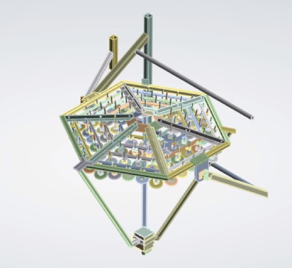

Trinity Neutrino Observatory VIP
Mechanical CAD Modeling, ANSYS Structural Simulation, and Field Deployment

Precision SolidWorks 3D CAD
Developed high-precision 3D assembly models for scale prototypes of the Trinity One Telescope and Demonstrator system. Managed complex sub-assemblies, mounting brackets, mirror positioning arms, and optical alignment fixtures.

ANSYS FEA Structural & Environmental Testing
Conducted finite element analysis (FEA) to verify telescope structural integrity under extreme operational conditions at Frisco Peak, Utah (high winds, thermal expansion cycles, and heavy snow loads). Conducted tolerance stack-up analysis to ensure optical alignment during harsh mountain conditions.